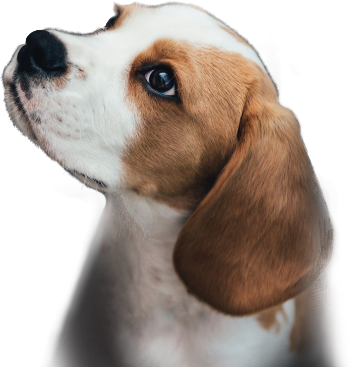

<section class="not-only">
  <div class="container not-only__container">
    <div class="not-only__description">
      <h1 class="not-only__heading"> Not only people <br> need a house </h1>
      <p class="not-only__text">We offer to give a chance to a little and nice puppy with an extremely <br> wide and
        open heart. He or she will love you more than anybody else <br> in the world, you will see! </p>
      <button class="button not-only__button" href="#friends">Make a friend</button>
    </div>
    <picture class="not-only__image">
      <source media="(max-width: 320px)"
        srcset="../../img/start-screen-puppy-small.avif 1x, ../../img/start-screen-puppy-small-2x.avif 2x"
        type="image/avif">
      <source media="(max-width: 320px)"
        srcset="../../img/start-screen-puppy-small.webp 1x, ../../img/start-screen-puppy-small-2x.webp 2x"
        type="image/webp">
      <source media="(max-width: 320px)"
        srcset="../../img/start-screen-puppy-small.png 1x, ../../img/start-screen-puppy-small-2x.png 2x">
      <source media="(max-width: 768px)"
        srcset="../../img/start-screen-puppy-medium.avif 1x, ../../img/start-screen-puppy-medium-2x.avif 2x"
        type="image/avif">
      <source media="(max-width: 768px)"
        srcset="../../img/start-screen-puppy-medium.webp 1x, ../../img/start-screen-puppy-medium-2x.webp 2x"
        type="image/webp">
      <source media="(max-width: 768px)"
        srcset="../../img/start-screen-puppy-medium.png 1x, ../../img/start-screen-puppy-medium-2x.png 2x">
      <source srcset="../../img/start-screen-puppy.avif, ../../img/start-screen-puppy-2x.avif 2x" type="image/avif">
      <source srcset="../../img/start-screen-puppy.webp, ../../img/start-screen-puppy-2x.webp 2x" type="image/webp">
      
    </picture>
  </div>
</section>
